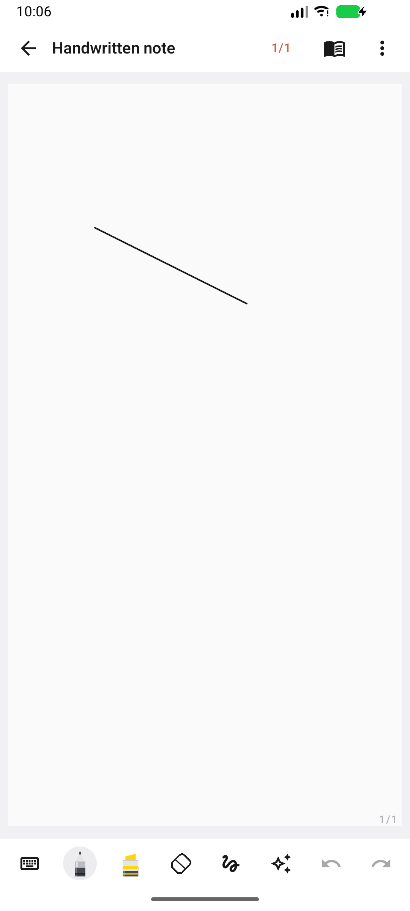
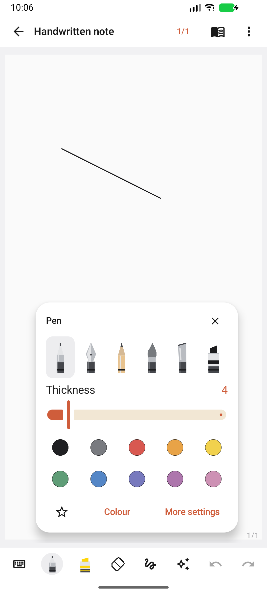
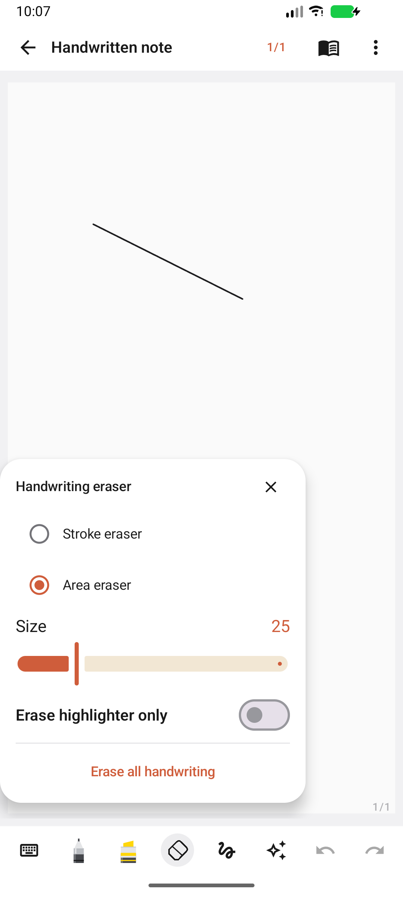

Superseded by version 1.1: the unified note editor now puts text, images and ink on the same page and adds the writing pad, recordings, and document-wide persistence/export.
15 October 2026. This revision replaces the crowded studio layout after hands-on feedback. It follows Samsung Notes' compact handwriting bar and contextual tool panels, rather than the previous multi-row tool dock. It is an independent reconstruction, not Samsung's app binary or a complete implementation of its proprietary document system.
Samsung's handwriting guide, its pen types and colours guide, and their published screenshots were reviewed alongside the supplied APK's static toolbar evidence. The reference uses a slim handwriting row, settings opened by tapping the active tool, area/stroke erasers, and lasso/rectangle selection. Reference images are review material only and are not bundled in the app.
| Previous problem | Changed behaviour |
|---|---|
| Mode chips, two tool rows, floating pages and zoom panel covered the page. | One 48dp handwriting row. No persistent floating zoom, favourites, or page-control panels. Page management is opened from the header; gestures handle pan/zoom. Full screen remains available. |
| Important tools were hidden off-screen in a scrolling dock. | Pen, highlighter, eraser, selection, handwriting tools, undo and redo fit in one row. The active pen/eraser opens a small popup above the bar. Pen types have individual vector silhouettes; six pen choices, thickness, colour and favourites are together. |
| Small page surrounded by unused canvas. | Paper opens at the available width, aligned at the top. Blank non-PDF pages can extend to fill the writing viewport; imported PDF dimensions are preserved. Ink is clipped consistently to the paper. |
| Selection and eraser actions produced misleading undo steps. | Empty erasing and unmoved selection gestures do not consume an undo step. Rectangle selection and partial-object selection are functional. Historical input samples are batched into one preview build per event. |
| Notes list and text editor showed too many independent controls. | Neutral surfaces, sans-serif type, orange accent, simpler library, search on demand, one create-note action. Images, PDFs, checklists and recordings live in the Insert menu. Handwriting mode reopens the note's existing drawing; switching back to text saves it. |
32 tests passed: 12 JVM and 20 Android. New tests perform the real Fountain selection, writing, stroke erasing and Undo flow; enforce at least 80% of the phone screen for the writing viewport; and verify rectangle selection and undo behaviour. Existing pressure/palm-input, persistence, text editing and PDF export checks also pass. Android lint: 0 errors, 72 warnings.
Manual review includes opening a note, writing, returning to text, reopening the same drawing, and inspecting its saved vector points and page dimensions. Screens below are captures from the app, not mockups.



Typed text and ink still use separate editor modes and content blocks; free mixing of typed text and ink on one Samsung-style document surface is not implemented. Samsung account sync, proprietary file compatibility, widgets, image OCR, vendor-specific S Pen gestures and the easy-writing pad are not implemented. Handwriting recognition uses ML Kit but the emulator cannot download its language model because Google download DNS resolution fails. Physical S Pen latency and live collaboration are unverified; worker metadata changes have not been deployed. This build should not be presented as full Samsung Notes parity.
Updated debug APK · Original static APK investigation · Ink implementation detail